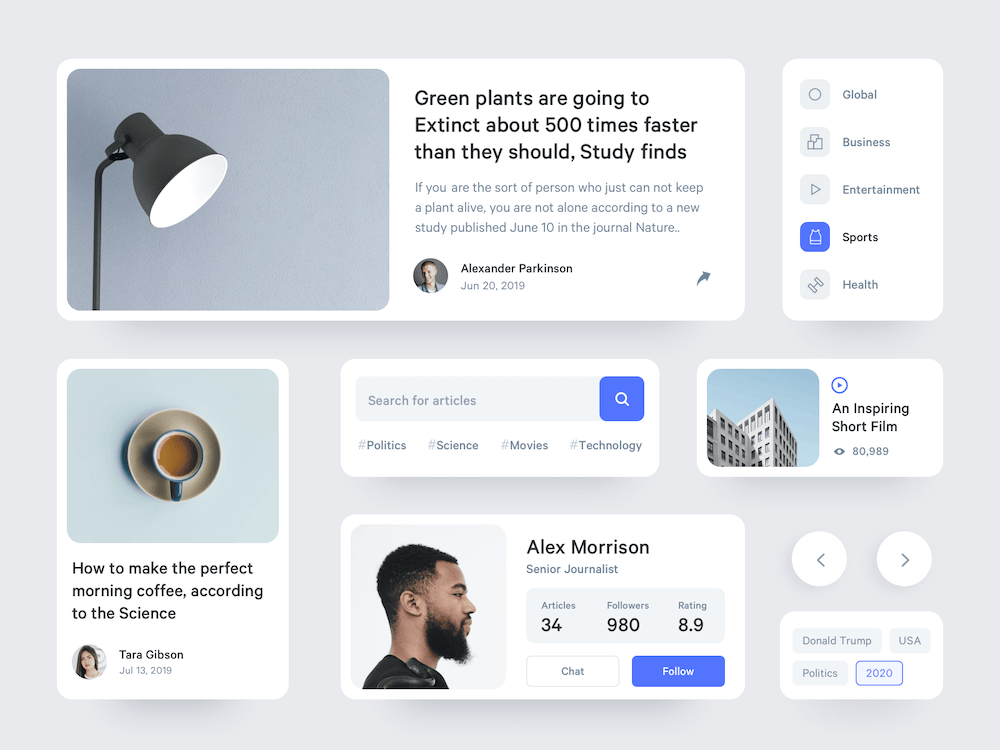

Crafting a scalable CSS design system
• Content by priority kids. • Photo credits: vlockn
Design systems are key to managing code at scale, but creating one that’s flexible and maintainable takes work. A key to success is to break UI elements into reusable, abstracted components.
Respect constraints: Construct stylistic foundations for typography, color palettes, spacing, etc. But don’t be overly prescriptive. Leave room for one-off deviations.
Reusable components: Break UI elements into reusable, abstracted components. A button should be built independently of where it’s used. This promotes consistency across properties and apps.
Clear naming conventions: Utilize consistent, semantic naming for classes, variables, mixins, etc. This improves developer efficiency and organization.
Keep things minimal
It's important to keep things lightweight: Write CSS that’s DRY, separating structure from skin using methodologies like BEM. Don't over-engineer — keep logic simple.
<figure ="img" :class="class" :id="id">
<img loading="lazy" :alt="alt" :src="_ || src">
<figcaption :if="caption">{{ caption }}</figcaption>
<p :if="caption">{{ caption }}</p>
<script>
constructor(data) {
this.caption = data.caption || ''
}
</script>
</figure>Use gradual rollouts: Introduce changes incrementally over time. Don't rebuild everything at once. Maintain backwards compatibility.
By investing in these areas, you can craft a design system that brings cohesion and consistency to products, while still being flexible enough to allow for creative solutions. The ultimate goal is scalable, maintainable CSS that matches the ever-evolving needs of organizations and developers alike. Put in the work upfront, and your system will pay dividends down the road.
Once a painting is underway, digital photography can also assist the process. Taking in-progress photos allows you to see compositions with fresh eyes. You can spot areas for improvement, mistakes that require correcting, or places that would benefit from increased attention. Like having an undo button, it gives the opportunity for editing mid-painting.
Put in the work upfront, and your system will pay dividends down the road.
<form ="join-list">
<label>
<h4>Your name</h4>
<input type="text" name="name" required>
</label>
<label>
<h4>Your email</h4>
<input type="email" name="email" required>
</label>
<label>
<h4>Your requirements</h4>
<textarea name="feedback" placeholder="Type here..."/>
</label>
<button>I'm interested</button>
</form>Summary
By investing in these areas, you can craft a design system that brings cohesion and consistency to products, while still being flexible enough to allow for creative solutions. The ultimate goal is scalable, maintainable CSS that matches the ever-evolving needs of organizations and developers alike. Put in the work upfront, and your system will pay dividends down the road.
Using color effectively is a vital part of web design. When planned intentionally, your color palette creates visual harmony across your website or application. A cohesive color scheme boosts recognition of your brand, while making the interface feel cohesive.